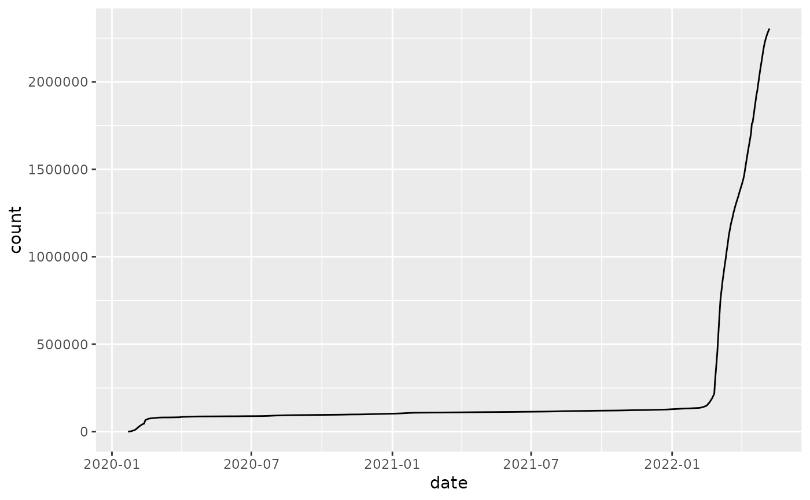
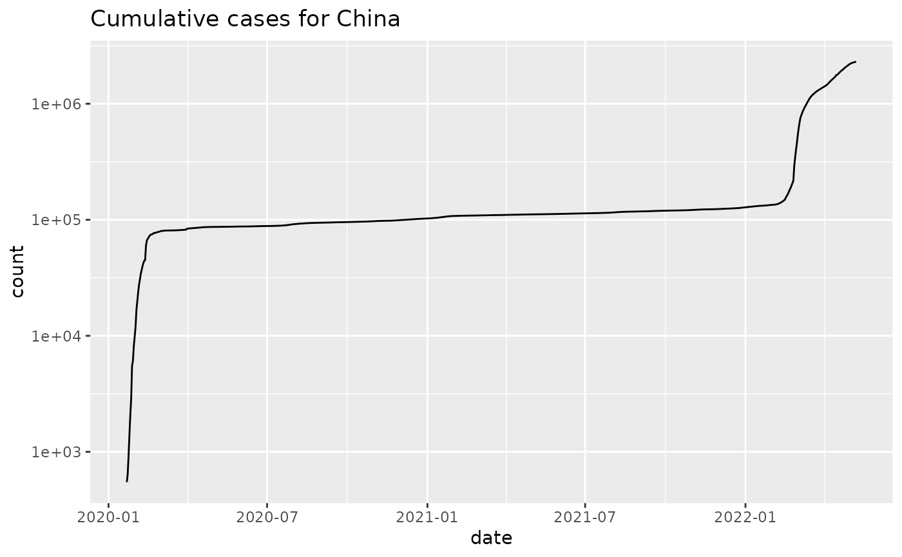

plot_epicurve is a simplifying wrapper around ggplot to
produce curves of cumulative cases versus time. The input
data frame should contain at least:
plot_epicurve( df, filter_expression, date_column = "date", case_column = "count", ..., log = TRUE )
Arguments
| df | a data frame with columns that include at least a date column and an integer count column |
|---|---|
| filter_expression | an expression that is passed directly to |
| date_column | character(1) the column name of the |
| case_column | character(1) the column name of the |
| ... | passed to |
| log | logical(1) TRUE for log10 based y-scale, FALSE for linear |
Details
a date column (or any data type that has a natural time order); this will become the x-axis
a cumulative
countcolumn; this will become the y-axis
An additional common use case is to provide a grouping variable
in the data.frame; specifying color=... will draw group-specific
curves on the same plot. See examples.
See also
Other plotting:
align_to_baseline(),
plot_projection()
Other case-tracking:
align_to_baseline(),
beoutbreakprepared_data(),
bulk_estimate_Rt(),
combined_us_cases_data(),
coronadatascraper_data(),
covidtracker_data(),
ecdc_data(),
estimate_Rt(),
eu_data_cache_data(),
jhu_data(),
nytimes_county_data(),
owid_data(),
test_and_trace_data(),
usa_facts_data(),
who_cases()
Examples
library(dplyr) jhu = jhu_data() %>% filter(CountryRegion=='China' & subset=='confirmed') %>% group_by(CountryRegion,date) %>% summarize(count=sum(count))#>#> # A tibble: 6 x 3 #> # Groups: CountryRegion [1] #> CountryRegion date count #> <chr> <date> <dbl> #> 1 China 2020-01-22 548 #> 2 China 2020-01-23 643 #> 3 China 2020-01-24 920 #> 4 China 2020-01-25 1406 #> 5 China 2020-01-26 2075 #> 6 China 2020-01-27 2877jhu %>% plot_epicurve(log=FALSE)# Work with testing data cc = covidtracker_data() %>% dplyr::mutate(total_tests = positive+negative) %>% dplyr::filter(total_tests>0) head(cc)#> # A tibble: 6 x 17 #> date fips state positive negative death pending hospitalized #> <date> <chr> <chr> <int> <int> <int> <int> <int> #> 1 2020-09-29 00002 AK 8674 442382 56 NA NA #> 2 2020-09-29 00001 AL 153554 983163 2517 NA 17182 #> 3 2020-09-29 00005 AR 82755 927902 1350 NA 5354 #> 4 2020-09-29 00060 AS 0 1571 0 NA NA #> 5 2020-09-29 00004 AZ 218184 1239906 5632 NA 22047 #> 6 2020-09-29 00006 CA 807425 13806120 15640 NA NA #> # … with 9 more variables: hospitalizedCurrently <int>, recovered <int>, #> # inIcuCumulative <int>, inIcuCurrently <int>, onVentilatorCurrently <int>, #> # onVentilatorCumulative <int>, dateChecked <dttm>, dataQualityGrade <chr>, #> # total_tests <int>plot_epicurve(cc, case_column='total_tests', color='state', log=FALSE) + ggtitle('Total tests by state') + ggplot2::theme(legend.position='bottom')# get tests per 100k population # use the tidycensus package to get # population data if(require(tidycensus)) { pop = tidycensus::get_estimates(geography='state',product='population') %>% dplyr::filter(variable=='POP') head(pop) # fix GEOID column to be 5-digit fips pop$GEOID=integer_to_fips(as.integer(pop$GEOID)) cc_pop = merge(cc,pop, by.x='fips', by.y='GEOID', all.x=FALSE, all.y=FALSE) cc_pop = cc_pop %>% mutate(tests_per_100k = total_tests/value * 100000) plot_epicurve(cc_pop, case_column='tests_per_100k', color='state', log=FALSE) + ggtitle('Total tests per 100,000 people') + ggplot2::theme(legend.position='bottom') }#>